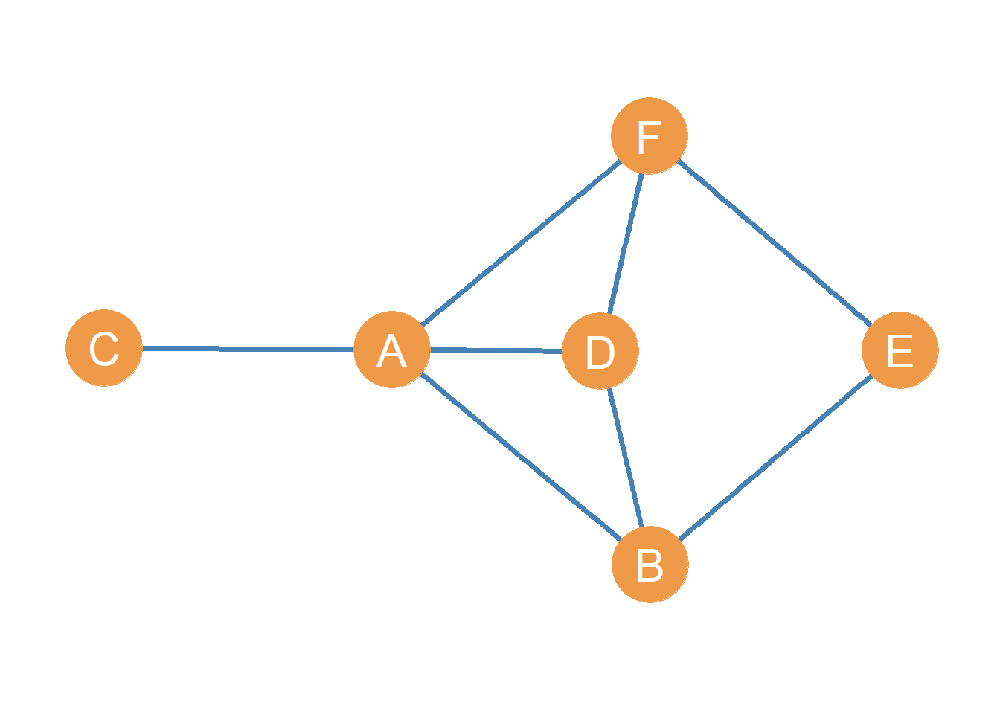

3 Nodes and their Neighborhoods
3.1 Node Neighborhoods
As we have seen, each node in a graph or order \(N\), given by the set \(V = \{v_1, v_2, v_3, \dots v_N\}\) may be adjacent to a certain set of other nodes. In graph theory, these are called the node’s neighbors.The neighborhood of a node in a graph is written as \(\mathcal{N}(v)\), where \(v\) is the node’s name in the graph. For instance, if we are referring to the neighbors of node A in the graph shown as Figure 3.1 we would write \(\mathcal{N}(A)\).
The neighborhood of each node is a proper subset of the larger set of nodes in the graph \(V\). This is written as \(\forall v: \mathcal{N}(v) \subset V\), which translates from math to English as “for all nodes \(v\), the neighborhood of \(v\) is a subset of the larger node set \(V\).” In Figure 3.1 for instance, \(\mathcal{N}(A) = \{B, C, D, F\}\), and \(\mathcal{N}(A) \subset V\).1

3.1.1 Node Neighborhood Intersection
Note that the neighbor sets of two nodes can have members in common. For instance, in Figure 3.1 we have \(\mathcal{N}(A) = \{B, C, D, F\}\) and we also have \(\mathcal{N}(D) = \{A, B, F\}\). These two sets share common members!
Sometimes we may be interested in the total number of other people that two nodes share a connection with. Like when you wonder how many people you and your friend are both friends with (or a social media algorithm lets you know). This is called the intersection of the two node neighborhood sets.
So if A and D are both nodes in a graph, the intersection of their neighborhood sets gives us a list of the other nodes in the graph they are both connected to. Using set theory notation, this can be written as: \(\mathcal{N}(A) \cap \mathcal{N}(D) = \{B, F\}\), which says that nodes A and D have B and F as common neighbors.2
The cardinality of the sets formed by the intersection of the neighborhoods of all the nodes in the graph gives us the number of common neighbors, which may be zero if two neighborhoods sets are disjoint.3 In graph theory, two sets are disjoint if they have no members in common. We will see in a later lesson that this quantity has applications for deriving important matrices from graphs and computing some key network metrics in the network.
Note that two nodes can have common neighbors even if they are not directly connected in the network! So the number of common neighbors is defined for both connected and null dyads.
For instance, in Figure 3.1, the intersection of the neighborhoods of nodes D and E exists and it is given by \(\mathcal{N}(D) \cap \mathcal{N}(E) = \{B, F\}\) even though nodes D and E are not linked (they are nonadjacent).
3.1.2 Node Neighborhood Union
Sometimes we may be interested in the total number of other people that two nodes are connected to, regardless of whether both of them are connected to them. Think of this as adding the set of people that you know with the set of people one of your friends knows, counting the people that your friend knows but you don’t, and the people you know but your friend doesn’t. This is called the union of the two node neighborhood sets.
So if A and D are both nodes in a graph, the union of their neighborhood sets gives us a list of the total number of other nodes in the graph either one is connected to.
Using set theory notation, this can be written as:4
\[ \mathcal{N}(A) \cup \mathcal{N}(D) = \{B, C, F\} \tag{3.1}\]
Which says that nodes A and D have B C, and F as neighbors, but not necessarily common neighbors.
As we will see later, the intersection and union of the neighborhood sets can be used as a basis to construct measures of (structural) similarity between nodes in a graph.
3.2 Node Degree
In a graph, a given node’s degree can be defined in two ways, both of which lead to the same answer.
One way to think about the degree of a given node \(i\) in a graph (written \(k_i\)) is as the cardinality of the set of neighbors of that node as defined earlier:
\[ k_i = |\mathcal{N}(i)| \tag{3.2}\]
So in the graph shown in Figure 3.1, \(k_A = |\mathcal{N}(A)| = |\{B, C, D, F\}|=4\).
Another way to think about node degree is not as the cardinality of the node neighborhood set, but as a count of edges. In this case, we count the number of edges that have a given node \(i\) as one of their endpoints. Recall, that an edge that has a given node as one of their endpoints is said to be incident upon that node. So in the graph shown in Figure 3.1, the set of edges that have node A as one of their endpoints is \(k_A = \{AB, AC, AD, AF\}\) and \(|k_A|\) = 4.
Either way, computing degree as the cardinality of the node’s neighbor set or as the number of edges incident upon the node, gives us the number of other actors that a given node is connected to in the network. We will see in a later lesson, that this is an important measure of node position called degree centrality (Freeman 1977).
References
The mathematical symbol for subset is \(\subset\).↩︎
The mathematical symbol for set intersection is \(\cap\).↩︎
In set theory, the cardinality of a set is the number of members in that set. Thus, the cardinality of the set \(\{A, B, C, D\}\) is four.↩︎
The mathematical symbol for set union is \(\cup\).↩︎